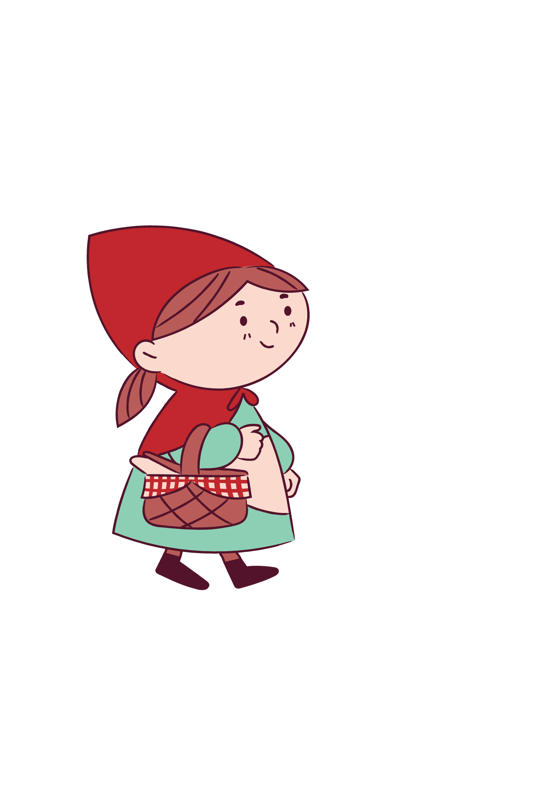
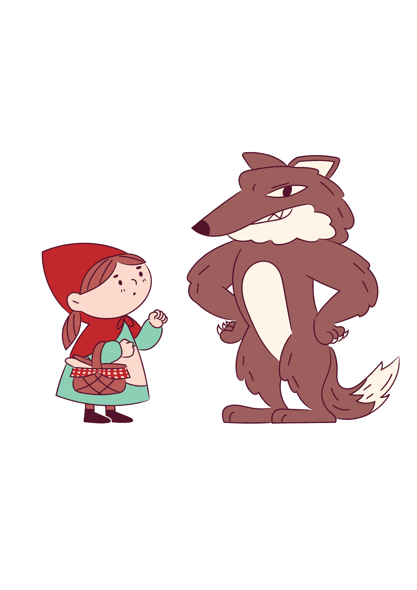
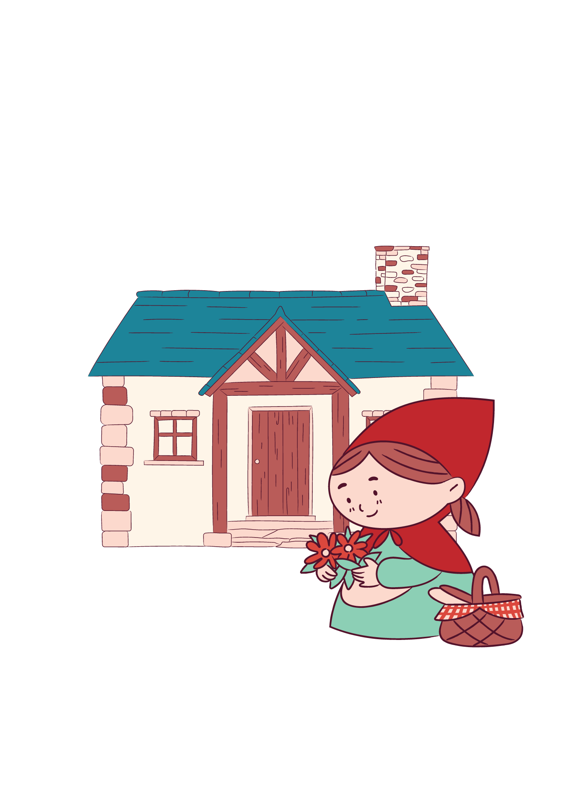
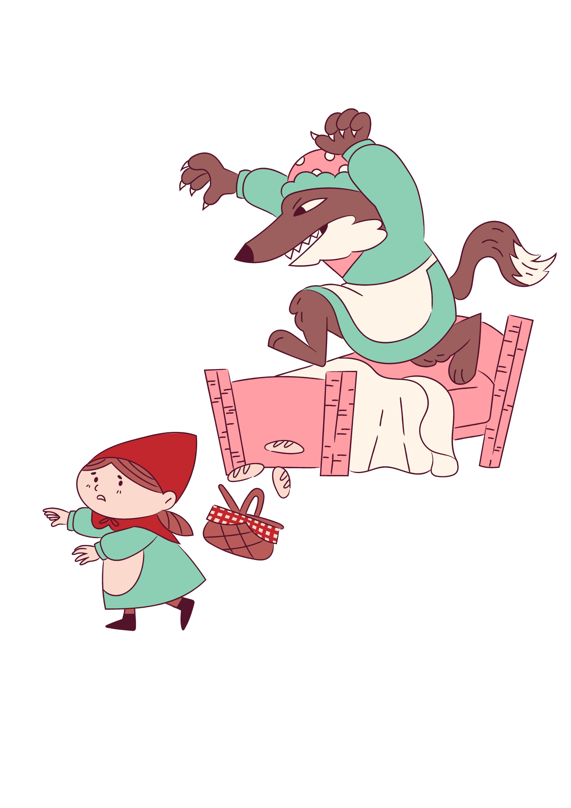
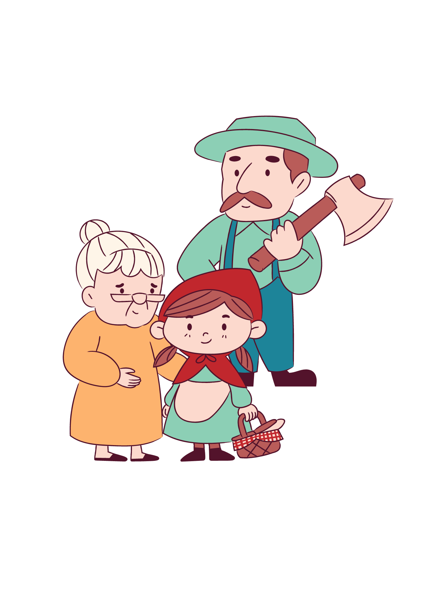

Caperucita Roja

Había una vez una niña llamada Caperucita Roja. Su madre le había
hecho una hermosa capa roja, y desde entonces todos la llamaban así.
Un día, su madre le pidió que llevara una cesta con comida a su
abuela, que vivía en el bosque. Antes de salir, su madre le advirtió:
"No te salgas del camino y no hables con extraños". Caperucita Roja
prometió hacerlo y comenzó su viaje por el bosque. Mientras caminaba,
se encontró con un lobo astuto.
El lobo le preguntó a dónde iba, y ella, olvidando la advertencia de
su madre, le dijo que iba a casa de su abuela. El lobo decidió correr
hacia la casa de la abuela y llegó primero. Al llegar, se disfrazó de
la abuela y se metió en la cama.


Cuando Caperucita Roja llegó, se sorprendió al ver la puerta abierta.
Entró y se acercó a la cama. "¡Abuela, qué ojos tan grandes tienes!",
dijo Caperucita Roja. "Son para verte mejor", respondió el lobo
disfrazado. "¡Abuela, qué orejas tan grandes tienes!", continuó ella.
"Son para oírte mejor", dijo el lobo. Finalmente, Caperucita Roja
exclamó: "¡Abuela, qué dientes tan grandes tienes!" Y el lobo,
revelando su verdadera identidad, respondió: "¡Son para comerte
mejor!"
Entonces, el lobo saltó de la cama y se lanzó hacia Caperucita Roja.
Sin embargo, un cazador que pasaba por allí oyó los gritos y corrió a
la casa. Entró y, con valentía, logró salvar a Caperucita Roja y a su
abuela, que estaban atrapadas en el estómago del lobo.


El cazador cortó el estómago del lobo, y ambas mujeres salieron sanas
y salvas. Caperucita Roja prometió nunca más desobedecer a su madre y
aprendió a ser más cuidadosa. Desde ese día, Caperucita Roja siempre
siguió el camino y nunca habló con extraños.
Fin